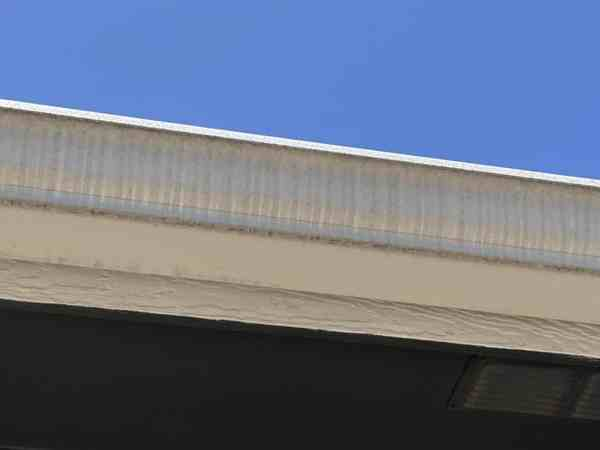
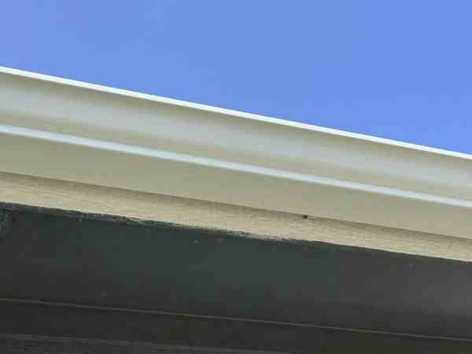

01
House Washing
Material-appropriate exterior cleaning for siding, brick, stone, stucco, trim, and soffits.
Learn about house washing →Professional soft washing, pressure washing, roof cleaning, gutters, windows, and more—delivered with honest service, fair pricing, and firefighter-level attention to detail.
Enhance curb appeal.
Professional house washing, roof cleaning, concrete cleaning, gutter care, exterior window cleaning, fence and deck cleaning, dryer vent cleaning, underground drain flushing, rust stain removal, and specialty services for Tulsa and surrounding areas.
Material-appropriate exterior cleaning for siding, brick, stone, stucco, trim, and soffits.
Learn about house washing →Soft-wash treatment for dark organic staining on safely accessible one-story asphalt-shingle roofs.
Learn about roof cleaning →Driveways, sidewalks, patios, and pavers cleaned for a brighter appearance.
Learn about concrete cleaning →Gutter cleanouts with standard downspout flushing and optional exterior brightening. When existing guards block access, temporarily removing and reinstalling those same guards is a required add-on.
Learn about gutter care →Exterior windows, screens, frames, sills, and hard-water treatment options.
Learn about window cleaning →Cleaning and flushing for accessible underground downspout lines, solid yard drains, and French-drain runs.
Learn about underground drain flushing →Specialty treatment for localized rust and iron staining on compatible exterior surfaces.
Learn about rust stain removal →Residential cleaning for accessible dryer vent runs, with standard and complex configurations reviewed separately.
Learn about dryer vent cleaning →Fence and deck cleaning with premium restoration options for heavily soiled outdoor wood.
Learn about fences & decks →Trash bins, patio furniture, A/C condenser add-ons, vehicles, boats, trailers, and roof blow-offs.
Get an instant estimate →Request everything your property needs at once. Kyle will confirm the complete scope and any available savings in the final estimate.
Know the approximate measurements? Build a preliminary range now. Not sure? Send your address and photos directly to Kyle.
Enter approximate quantities and see a protected preliminary range.
Start estimating →No measurements required. Send the address and clear property photos.
Open a text →Choose the services you need and enter approximate measurements or quantities. Your rate details stay hidden; you’ll only see a protected estimated range.
Use roof square footage for roof washing and living-area square footage for house washing.
Low-pressure treatment for algae, black streaks, moss, and organic staining. Higher, steep, complex, elevated, or difficult-access roofs require review and may be declined.
Material-appropriate exterior cleaning for siding, brick, stone, stucco, eaves, and common organic buildup.
Detailed cleaning of accessible trim, fascia, soffits, and related painted surfaces.
Detailed cleaning of safely accessible trim, fascia, soffits, and related painted surfaces.
Stand-alone detailed cleaning of accessible exterior trim, fascia, soffits, and related painted surfaces.
Stand-alone detailed cleaning of safely accessible exterior trim, fascia, soffits, and related painted surfaces.
For confirmed serviceable areas that require additional safe-access setup. Unsafe work is declined rather than surcharged.
Use the approximate total length of the gutters being serviced.
Removes loose debris from accessible gutters and flushes standard above-ground downspouts to confirm flow.
Required when existing gutter guards must be temporarily removed to clean underneath them and then put back. We do not sell or install new gutter guards.
Detail cleaning for dark streaks and oxidation-like staining on the exterior face of accessible gutters.
Additional clearing for one above-ground downspout that remains clogged after a standard flush.
Enter square feet for flat surfaces, decks, and every fence side being cleaned.
Surface cleaning for common dirt and organic buildup on accessible concrete.
Material-appropriate cleaning for accessible paver surfaces.
Careful cleaning matched to accessible wood or composite decking.
Cleaning for accessible wood, vinyl, or composite fencing with ordinary dirt and organic buildup.
For accessible, heavily soiled or weathered fencing that needs additional treatment.
Exterior cleaning of one accessible patio-furniture item.
Exterior rinse and light debris removal for one accessible outdoor condenser as an add-on.
Count each window, screen, or specialty treatment that needs service.
Exterior glass cleaning for one standard-size first-floor window.
Exterior glass cleaning for one standard-size safely reachable second-floor window.
Exterior cleaning for one first-floor window with divided or French-style panes.
Exterior cleaning for one safely reachable second-floor divided or French-style window.
Gentle cleaning of one removable, serviceable first-floor screen.
Gentle cleaning of one removable, safely reachable second-floor screen.
Deep exterior frame and sill cleaning for one first-floor window beyond the standard glass service.
Deep exterior frame and sill cleaning for one safely reachable second-floor window beyond the standard glass service.
Starting price for light-to-moderate exterior frame oxidation.
Starting price for light-to-moderate exterior frame oxidation.
Specialty treatment for mineral deposits on one accessible exterior window.
Choose the quantity that applies to your property.
Specialty treatment of one localized rust-stained area on a compatible exterior surface.
Interior and exterior cleaning plus deodorizing for one empty, accessible trash or recycling bin.
One accessible dryer-vent run from appliance connection through the exterior termination, up to 40 feet of tool reach.
One accessible dryer vent from the exterior opening only.
One accessible underground downspout or solid yard-drain line, up to 100 feet. Additional lines are priced separately.
One accessible French-drain run, up to 100 feet, when usable access is available.
Basic exterior-wash pricing by vehicle type or linear foot.
Basic exterior wash for one standard-size car with ordinary road dirt.
Basic exterior wash for one standard pickup or SUV with ordinary road dirt.
Basic exterior wash for one larger pickup or work truck.
Basic exterior wash for one large commercial truck.
Basic exterior wash priced by trailer length.
Basic exterior wash priced by boat length while safely accessible on its trailer.
Basic exterior wash priced by RV length.
Basic exterior wash for one UTV or side-by-side with ordinary dirt.
Select a service to begin.
Apply the 5% service discount. Eligibility is confirmed before scheduling.
This is a preliminary range—not a guaranteed final price or a scheduled appointment. Kyle confirms final pricing and scheduling after reviewing the address, photos, measurements, access, surface condition, and job complexity.
These are real customer properties—not stock photos. Move each slider to see the difference.

 BEFOREAFTER
BEFOREAFTER
 BEFOREAFTER
BEFOREAFTER

BEFOREAFTERNo mystery crew and no borrowed portfolio. This is our truck, our equipment, and the same careful process we bring to homes throughout Tulsa and surrounding communities.
Equipment selected for consistent, even cleaning.
Careful setup, controlled methods, and a clean finish.
Clear communication directly with the owner.
Every clip below is real footage from our local exterior-cleaning work.
Wood, masonry, gutters, and concrete each need a different approach. We match the method to the surface and let the results speak for themselves.
Surface-aware cleaning lifts organic buildup and weathering while respecting the material underneath.

 BEFOREAFTER
BEFOREAFTERA careful clean can transform walls, columns, patios, and other hardscape without making the surface look overworked.
Kyle did an amazing job cleaning years of debris from under our gutter guards. Very affordable, professional, and highly recommended—the rain flows properly again!
Everything is flowing beautifully again! He took before and after videos and even alerted me to roof damage I was unaware of.
Kyle cleaned our gutters and power washed our walkways. Everything looks brand new! Very pleasant and reasonably priced.
He has our windows looking cleaner than they’ve been in years! Very decent pricing also. 10/10 recommend!
Kyle is very honest and extremely professional. I will have him back to do additional cleaning soon.
Firefighter-paramedic. Local business owner. The person who shows up.
First In Response Exteriors is more than a company name—it reflects how Kyle approaches every job. As a local firefighter-paramedic, he built the business around showing up prepared, communicating clearly, protecting the customer’s property, and treating every home with the same care he would want for his own.
When you call or text, you’re speaking directly with Kyle. He personally reviews estimate requests, recommends the appropriate cleaning method for each surface, and takes pride in delivering honest work without unnecessary upsells.
First In Response Exteriors is a local, firefighter-owned company. That means showing up, communicating clearly, protecting your property, and doing the job with pride.
No unnecessary upsells—just the services your property actually needs.
Soft washing or controlled pressure based on the material and condition.
Thoughtful prep, plant protection, and a careful final walkthrough.
Start with your address and a few photos for a fast, no-pressure estimate.
Text photos and your address so we can quickly understand the job.
We’ll explain the recommended service, scope, and price before work begins.
We arrive prepared, protect the property, and clean it like we own it.
No measurements needed. Complete this quick form and your phone will open a prepared text to Kyle. Add a few photos in the text thread so we can personally review your property and recommend the right service.
You review the prepared text before sending. Nothing is submitted from this form automatically.
Roof cleaning is handled with a low-pressure soft-wash approach where appropriate. Unsafe or unsuitable roof work is declined.
Yes. Send your address and clear photos and Kyle can often provide a starting estimate before a site visit.
Yes. Bundle savings may be available depending on the services and scope selected.
Tulsa and surrounding communities.
Yes. First In Response Exteriors is insured.
Move fragile items, close windows, secure pets, and make sure requested work areas can be safely accessed.
Weather-sensitive work may be rescheduled when conditions would affect safety or results.
A 5% first responder and military appreciation discount is available year-round, with eligibility confirmed before scheduling.
Most exterior-cleaning services require access to an appropriate on-site water source unless otherwise arranged.
Jobs have a $150 minimum service charge even when the calculated individual service amount would be lower.
No. Work is limited to safely reachable low-rise areas with current equipment.
No. Some oxidation, mineral deposits, rust, paint damage, etching, permanent fading, and other conditions require specialty treatment or may remain.